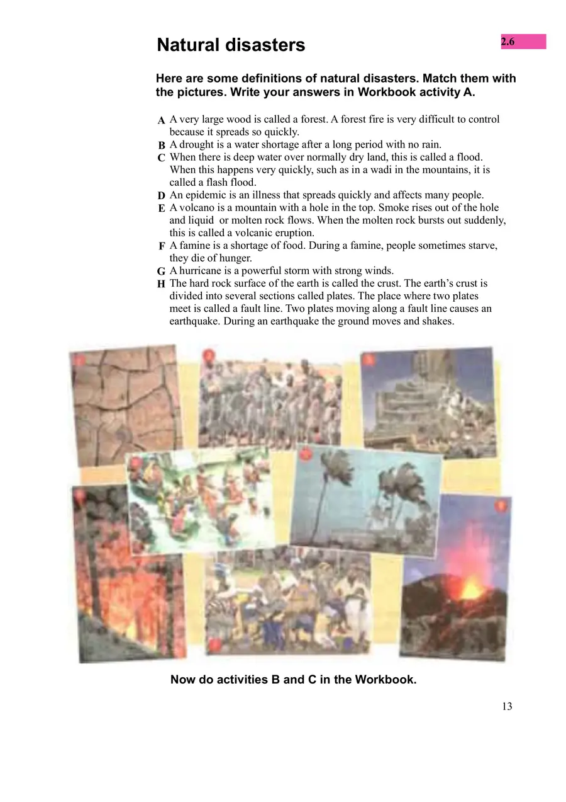

2.6 Natural disasters Here are some definitions of natural disasters. Match them with the pictures. Write your answers in Workbook activity A.
A A very large wood is called a forest. A forest fire is very difficult to control because it spreads so quickly. B A drought is a water shortage after a long period with no rain. C When there is deep water over normally dry land, this is called a flood. When this happens very quickly, such as in a wadi in the mountains, it is called a flash flood. D An epidemic is an illness that spreads quickly and affects many people. E A volcano is a mountain with a hole in the top. Smoke rises out of the hole and liquid or molten rock flows. When the molten rock bursts out suddenly, this is called a volcanic eruption. F A famine is a shortage of food. During a famine, people sometimes starve, they die of hunger. G A hurricane is a powerful storm with strong winds. H The hard rock surface of the earth is called the crust. The earth’s crust is divided into several sections called plates. The place where two plates meet is called a fault line. Two plates moving along a fault line causes an earthquake. During an earthquake the ground moves and shakes. Now do activities B and C in the Workbook.
[
{
"letter": "1",
"word": "Picture 1 (cracked dry earth)",
"ar": "صورة 1 (أرض متشققة جافة)",
"answer": "B"
},
{
"letter": "2",
"word": "Picture 2 (crowded starving people)",
"ar": "صورة 2 (حشد يعاني الجوع)",
"answer": "F"
},
{
"letter": "3",
"word": "Picture 3 (collapsed building rubble)",
"ar": "صورة 3 (أنقاض مبانٍ مهدمة)",
"answer": "H"
},
{
"letter": "4",
"word": "Picture 4 (deep water flooding village & boats)",
"ar": "صورة 4 (مياه فيضان تغمر القرية)",
"answer": "C"
},
{
"letter": "5",
"word": "Picture 5 (palm trees bent by fierce wind)",
"ar": "صورة 5 (أشجار نخيل تميلها رياح عاتية)",
"answer": "G"
},
{
"letter": "6",
"word": "Picture 6 (burning trees in red flames)",
"ar": "صورة 6 (نيران مشتعلة في غابة)",
"answer": "A"
},
{
"letter": "7",
"word": "Picture 7 (ill children/crowd at health camp)",
"ar": "صورة 7 (مرضى في مخيم طبي)",
"answer": "D"
},
{
"letter": "8",
"word": "Picture 8 (glowing crater eruption)",
"ar": "صورة 8 (ثوران فوهة بركان)",
"answer": "E"
}
][
{
"num": 1,
"question": "The radio station was flooded with telephone calls. (underlined: flooded)",
"model_answer": "Received an overwhelming number of telephone calls all at once (as if covered by a sudden flood of water).",
"explain_ar": "استُعير معنى الفيضان للتعبير عن كثرة المكالمات الهائلة المتدفقة دفعة واحدة."
},
{
"num": 2,
"question": "Recently there has been a crime epidemic in the capital. (underlined: epidemic)",
"model_answer": "A sudden, rapid spread of crime affecting many people (like a fast-spreading disease).",
"explain_ar": "استُعير الوباء للدلالة على انتشار الجرائم بسرعة وبكثافة غير معتادة."
},
{
"num": 3,
"question": "The news of the Princess's death spread around the country like a forest fire. (underlined: like a forest fire)",
"model_answer": "Spread extremely fast and widely from person to person (just as fire rushes across dry trees).",
"explain_ar": "تشبيه سرعة انتشار الخبر بين الناس بسرعة التهام حريق الغابة."
},
{
"num": 4,
"question": "In the mornings the headteacher rushes around the school like a hurricane. (underlined: like a hurricane)",
"model_answer": "Moves very quickly, noisily, and powerfully with great energy.",
"explain_ar": "تشبيه حركة المدير السريعة والقوية باندفاع الإعصار."
}
][
{
"num": 1,
"question": "What happens if you heat metal to a very high temperature?",
"model_answer": "It melts / becomes liquid and is called molten metal.",
"explain_ar": "توظيف كلمة molten (منصهر) كما وردت في تعريف البركان (molten rock)."
},
{
"num": 2,
"question": "How is an orange divided?",
"model_answer": "It is divided into sections (segments).",
"explain_ar": "توظيف كلمة sections (أقسام/شرائح) كما في تقسيم قشرة الأرض في H."
},
{
"num": 3,
"question": "You see long queues of cars at petrol stations. Why do you think this is?",
"model_answer": "Because there is a shortage of petrol (a petrol shortage).",
"explain_ar": "توظيف كلمة shortage (نقص) كما في تعريفي drought وfamine."
}
]{
"pb_text_vs_image": "طُوبقت التعريفات A–H وأرقام الصور 1–8 في pb13_disasters_1_8.webp عبر شريحة 400 DPI (pb13_disasters_zoom.png): تطابق كل صورة تعريفها دون لبس (1→B، 2→F، 3→H، 4→C، 5→G، 6→A، 7→D، 8→E).",
"wb_ocr_vs_image": "قُورنت صفحتا WB ص 18–19 مع tesseract.js eng: أخرجت OCR قيماً عشوائية للمربعات الفارغة في A ('1g', 'sO', 'sd') وصُحّحت بصرياً من wb-019.png وwb-020.png."
}